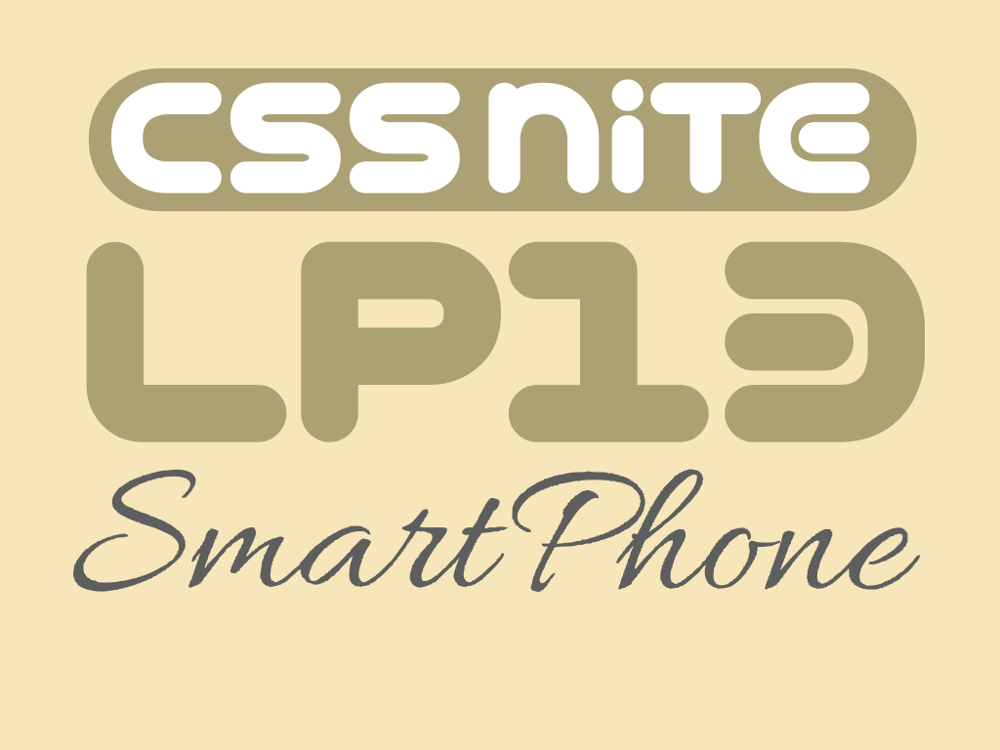
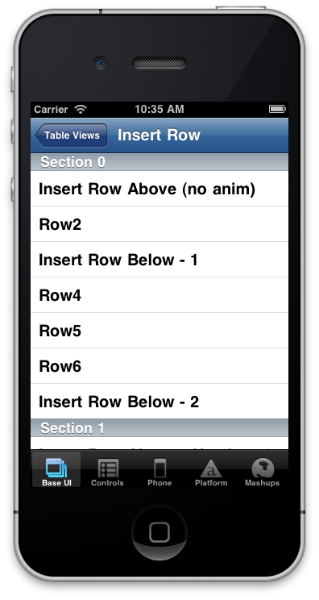
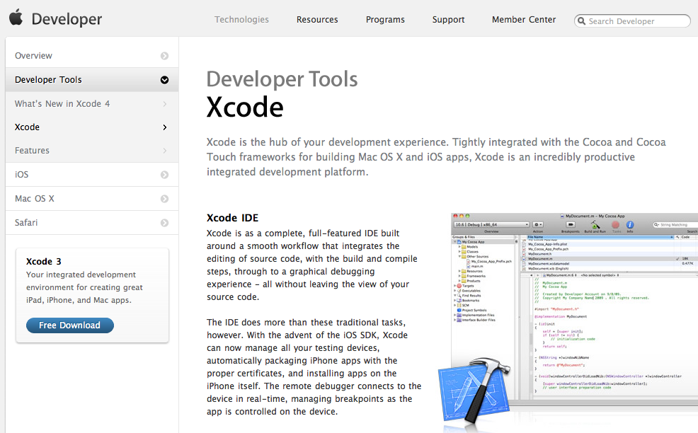

Web制作のノウハウでつくるiPhoneアプリ
2011.01.22
CSS Nite LP13
自己紹介
- 外村和仁（ほかむら かずひと）
- 株式会社ピクセルグリッド
- フロントエンドエンジニア
- JavaScript, Perl, Python, PHP, Vim, etc..
- Twitter: @hokaccha

アジェンダ
- ネイティブアプリとWebアプリの比較
- PhoneGapについて
- PhoneGapの制作Tips
- Titanium Mobileについて
- まとめ
ネイティブアプリとWebアプリの比較
前提知識
ネイティブアプリとは
- いわゆるiPhoneアプリのこと
Webアプリとは
- ブラウザから見ることができるアプリケーション
- GmailやTwitter,ロケタッチなどはWebアプリといえる
比較項目
- 開発言語
- App Storeでの配布
- マルチプラットフォーム
- 動作速度
- OS固有機能の使用
- UIの作成
- 開発環境
1. 開発言語
ネイティブアプリ
Objective-C。習得が難しいので開発コストがかかる
Webアプリ
HTML/CSS/JavaScript。Web制作の技術がそのまま使えるので開発コストが抑えられる
2. App Storeでの公開
ネイティブアプリ
できる。アプリ単体の課金がしやすいなどのメリットがある
Webアプリ
できない。アプリ単体での課金は難しいが審査が必要ないため、公開、更新の手間かからないのがメリット
3. マルチプラットフォーム
ネイティブアプリ
各プラットフォーム毎にアプリケーションをつくる必要がある
Webアプリ
ブラウザがインストールされているデバイスであればほとんど同じコードで対応可能
4. 動作速度
ネイティブアプリ
複雑なアニメーションをするゲームなどのアプリケーションも高速に動く
Webアプリ
画面遷移などのアニメーションであれば問題ないが複雑な動きになると重くなる
5. OS固有機能の使用
ネイティブアプリ
電話、カメラ、写真などの機能をアプリケーションから使うことができる
Webアプリ
使用できない。ただし位置情報や加速度センサなどの機能はJavaScriptから使用可能
6. UIの作成
ネイティブアプリ
ネイティブUIを使用できる。これらを組み合わせてアプリケーションをつくる
Webアプリ
UIは全部自前で実装する必要がある
7. 開発環境
ネイティブアプリ
Macがないと開発できない
Webアプリ
WindowsでもMacでも開発可能
ネイティブUIとは？


- 

ネイティブアプリとWebアプリの比較
| ネイティブアプリ | Webアプリ | |
|---|---|---|
| 開発言語 | Objective-C | HTML/CSS/JavaScript |
| App Storeでの配布 | ○ | × |
| マルチプラットフォーム | × | ○ |
| 動作速度 | ○ | △ |
| OS固有機能の使用 | ○ | × |
| ネイティブUIの使用 | ○ | × |
| 開発環境 | Mac | Mac/Windows |
Webアプリの例

- @180mmさんによるWebアプリ
- http://180mm.heteml.jp/
lab/runningApp/ - 位置情報を使って走った距離や走ったコースのマップなどを記録できるアプリ
- ネイティブに近いUIでとてもよくできている
- フルスクリーンモードが前提
フルスクリーンモードとは？


WebアプリをApp Store
に申請したい！
できます
PhoneGapについて
PhoneGapとは

- Xcodeのプラグイン(のようなもの)
- WebViewのみの空っぽのアプリができるのでそこにHTMLファイルを入れるというイメージ
- いくつかのOS固有機能が使える
Xcodeとは？
- 
PhoneGapの利点
- Webアプリの技術で開発できる
- App Storeに登録できる
- マルチプラットフォームに対応
- 最低限の開発や確認はMacがなくても可能（アプリ化するにはMacが必要）
- 審査に通らなくてもWebアプリとして公開できる
PhoneGapの問題点
- iOS Safariの問題がそのまま当てはまる
- position:fixedがきかない
- overflow:scrollがきかない(二本指のスクロールになる)
- etc..
PhoneGapの比較
| ネイティブアプリ | Webアプリ | PhoneGap | |
|---|---|---|---|
| 開発言語 | Objective-C | HTML/CSS/ JavaScript |
HTML/CSS/ JavaScript |
| App Storeでの配布 | ○ | × | ○ |
| マルチプラットフォーム | × | ○ | ○ |
| 動作速度 | ○ | △ | △ |
| OS固有機能の使用 | ○ | × | △ |
| ネイティブUIの使用 | ○ | × | × |
| 開発環境 | Mac | Mac Windows |
Mac (△Windows) |
Demo
Running Appを
PhoneGapで
アプリ化してみます
PhoneGapでの
制作Tips
作ったアプリ
- 位置情報から近くのお店を検索して表示する
- お気に入り、履歴などの機能がある
- デザインはiPhoneのネイティブUIをできるだけ再現した
- ※まだ公開されていないのでお見せできません
Webアプリとの挙動の違い
Good
- ステータスバーが消せる
- 縦横の固定ができる
- クロスドメインAjaxが可能
Bad
- bodyの高さが20pxずれる
- iframeがあるとSafariが起動する
- ステータスバータップのスクロールのイベントがとれない
制作途中のデバッグや確認
- 表示の確認はフルスクリーンモードのiOS Safariから確認
- JavaScriptのデバッグにはPCのブラウザも併用
- クライアントとの共有もブラウザで確認できるので楽にできた
ネイティブUIの実現
- いろいろなライブラリのいいところ取りをして作成
- 要素固定にはiScrollを使用
- アニメーションはjQtouchのアニメーションを参考に
- スワイプのイベントはjQuery Mobileのを自分で完了
HTML5の機能もフル活用
- 位置情報の取得にGeolocation API
- お気に入りや履歴のデータ保存にLocal storage
- 動画の再生はvideo要素
PhoneGapで制作してみての感想
- Webアプリとしてつくるのとほとんど変わらない
- Webアプリで可能な範囲のアプリをApp Storeに登録したいならPhoneGapはかなりオススメ
- ネイティブのUIをiOS Safari上で再現するのはかなり大変
ネイティブUIを
使いたい！
できます
Titanium Mobile
について
Titanium Mobileとは

- 「タイタニウム」と読む
- JavaScriptで書いたコードをネイティブのコードに変換する
- HTMLやCSSは存在せず、JavaScriptのみでUI部分も記述する
Titaniumの利点
- マルチプラットフォームに対応
- ネイティブのUIが使える
- iPhoneとアンドロイドで同じコードでそれぞれのネイティブUIになる
- ドキュメントやサンプルが充実していて開発しやすい
Titaniumの問題点
- Titanium固有の記述方法を覚える必要がある
- Objective-Cで書くより機能に制限がある
- 良くも悪くもまだ開発途中
Titaniumの記述例
// タブグループの作成
var tabGroup = Titanium.UI.createTabGroup();
// タブの作成
var tab1 = Titanium.UI.createTab({ icon:'tab1.png', title:'Tab 1' });
var tab2 = Titanium.UI.createTab({ icon:'tab2.png', title:'Tab 2' });
// タブグループにタブを追加
tabGroup.addTab(tab1);
tabGroup.addTab(tab2);
// タブグループを開く
tabGroup.open();Titanium Mobileの比較
| ネイティブアプリ | Webアプリ | PhoneGap | Titanium | |
|---|---|---|---|---|
| 開発言語 | Objective-C | HTML/CSS/ JavaScript |
HTML/CSS/ JavaScript |
JavaScript |
| App Storeでの配布 | ○ | × | ○ | ○ |
| マルチプラットフォーム | × | ○ | ○ | ○ |
| 動作速度 | ○ | △ | △ | △ |
| OS固有機能の使用 | ○ | × | △ | △ |
| ネイティブUIの使用 | ○ | × | × | ○ |
| 開発環境 | Mac | Mac Windows |
Mac (△Windows) |
Mac (△Windows) |
まとめ
- Web制作の技術だけでもネイティブアプリをつくるのは難しくない
- 手法は様々だがそれぞれの手法に長所、短所がある
- つくりたいものに合わせてツールを選ぶのが大事
- 個人的にはTitaniumのようなアプリケーションが流行るのではないかと予想